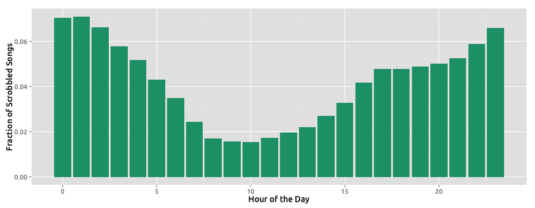
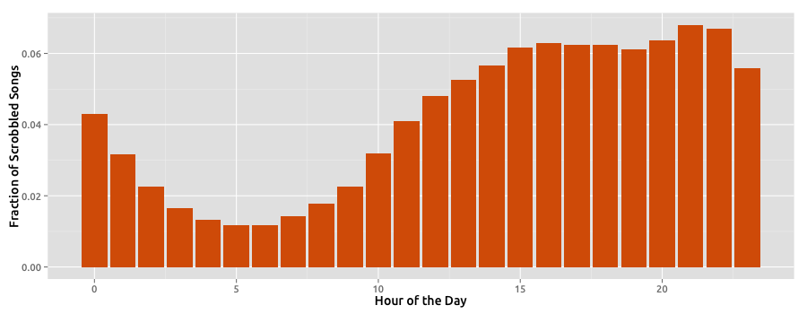

José Devezas, Computer Science PhD student @ DCC–FCUP.
José Devezas, Computer Science PhD student @ DCC–FCUP.
We've grouped data by the hour of the day and analyzed behavior by gender and country. While male and female music listening behaviors are very similar, listening habits seem to behave differently for different countries.
Below you can find an hourly chart for the total number of plays in the dataset, distinguishing between male, female and unknown genders.
Here you can see the hourly music plays distribution for each country in the dataset. Each bar indicates the fraction of music listened in the given country at each hour of the day. We've sorted facets from the country with the most global plays to the country with the least global plays. We've also clustered similar hourly behavior using k-means on this normalized hourly data. We used k=3 which resulted in the cluster that achieved the best silhouette value among the clusters generated with k from 2 to 6.
Note that in the original dataset, timestamps were in the UTC time standard. In order to offer a fair comparison between countries, we shifted the hour in each country by the mean time zone offset. Also notice that, as we approach the countries at the bottom, there is less data supporting those countries behaviors.
The following two charts illustrate the two different behaviors identified by the clustering process. At first, we thought averaging the time zone would have influenced the minimum shifting, however we found out that the countries in both clusters have a variable number of time zones, which indicates that it wasn't a factor that highly influenced the clustering.
This depicts a country that is either more active during the night, sleeping late, or who has people with many different schedules. It includes countries like China who are well known for their intensive working habits.
This depicts a country with low activity during the night, and that listens to music frequently while awake. It includes most of the countries, depicting the expected behavior of inactivity during the night.
Even though there are two distinctive listening habits among different countries, we believe they are not very different overall and that they do not deviate much from the expected behavior.